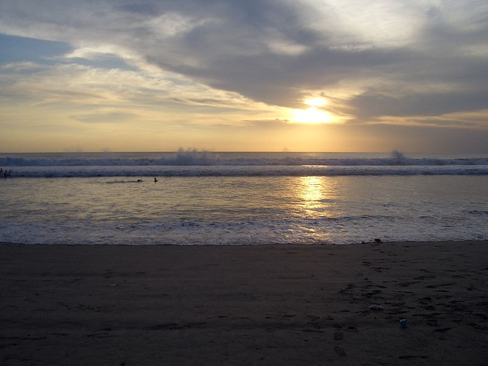
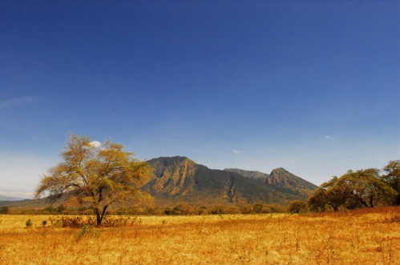
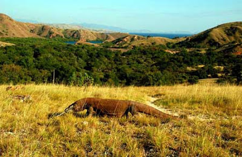

Gunung Agung adalah gunung tertinggi di pulau Bali dengan ketinggian 3.142 mdpl. Gunung ini terletak di kecamatan Rendang, Kabupaten Karangasem - Bali.
Mountain
Mt.Agung

Mt.Rinjani

Gunung Rinjani adalah gunung yang berlokasi di Pulau Lombok, Nusa Tenggara Barat. Gunung yang merupakan gunung berapi kedua tertinggi di Indonesia dengan ketinggian 3.726 m dpl serta terletak pada lintang 8º25' LS dan 116º28' BT ini merupakan gunung favorit bagi pendaki Indonesia karena keindahan pemandangannya.
Beach
Kuta Beach

Pantai Kuta adalah sebuah tempat pariwisata yang terletak kecamatan Kuta, sebelah selatan Kota Denpasar, Bali, Indonesia. Daerah ini merupakan sebuah tujuan wisata turis mancanegara dan telah menjadi objek wisata andalan Pulau Bali sejak awal tahun 1970-an.
Pandawa Beach

Pantai Pandawa adalah salah satu kawasan wisata di area Kuta selatan, Kabupaten Badung, Bali. Pantai ini terletak di balik perbukitan dan sering disebut sebagai Pantai Rahasia (Secret Beach). Di sekitar pantai ini terdapat dua tebing yang sangat besar yang pada salah satu sisinya dipahat lima patung Pandawa dan Kunti.
Forest
Baluran National Park

Taman Nasional Baluran adalah salah satu Taman Nasional di Indonesia yang terletak di wilayah Banyuputih, Situbondo, Jawa Timur, Indonesia (sebelah utara Banyuwangi). Nama dari Taman Nasional ini diambil dari nama gunung yang berada di daerah ini, yaitu gunung Baluran.
Komodo National Park

Taman Nasional Komodo terletak di antara provinsi Nusa Tenggara Timur dan Nusa Tenggara Barat.Taman nasional ini terdiri atas tiga pulau besar Pulau Komodo, Pulau Rinca, dan Pulau Padar serta beberapa pulau kecil. Wilayah darat taman nasional ini 603 km² dan wilayah total adalah 1817 km².